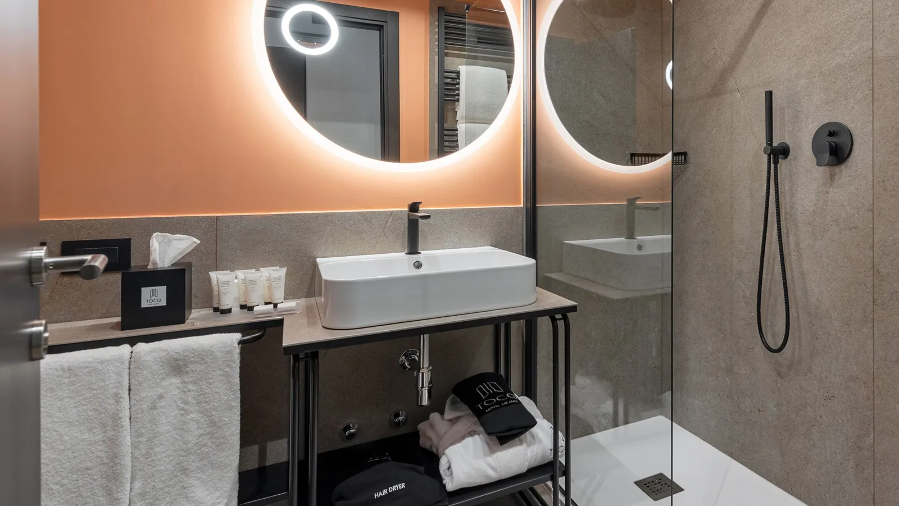

Colazione inclusa · cancellazione gratuita fino a 24 ore prima · il cuscino scelto, già sul letto.
Le camere
Cinque tipologie, tutte silenziose.
In ogni camera: insonorizzazione e oscuranti totali, wifi veloce, smart TV Samsung, aria condizionata, scrivania, frigobar, cassaforte, coffee point, prese USB e internazionali, set cortesia di Laboratorio Olfattivo e ciabattine. L'accappatoio è già in camera nelle Junior Suite; nelle altre basta chiederlo.

1 / 2
14 camere
Comfort
Per una o due notti di lavoro.
da 129 € a notte, colazione inclusa
Superficie
20 m²
Letto
Queen
Ospiti
1 o 2
Venti metri quadrati, un letto queen nuovo e un bagno grande con lo specchio a parete. Arrivi la sera, dormi al buio e nel silenzio, riparti la mattina dopo colazione.
La più prenotata da chi resta da lunedì a giovedì.
da 149 € a notte, colazione inclusa
Superficie
22 m²
Letto
Matrimoniale
Ospiti
1 o 2
Ventidue metri quadrati con arredi disegnati su misura, letto matrimoniale nuovo con quattro cuscini e lenzuola scelte una per una. Il bagno è ampio e luminoso. Per chi resta più notti e vuole sentirsi a casa, non in transito.
Ventiquattro metri quadrati, pareti nei toni del caffè, letto matrimoniale e un bagno spazioso. C'è posto per aprire la valigia, il portatile e i documenti senza spostare niente. In camera trovi anche il bollitore con gli infusi.
Trentaquattro metri quadrati, con una zona living separata dal letto: per la colazione in camera, una call senza nessuno intorno, un incontro con un cliente. Luce naturale per tutto il giorno, wifi veloce, bollitore con gli infusi.
Per la famiglia o per quattro colleghi, con una porta sola.
da 239 € a notte, colazione inclusa
Superficie
40 m²
Ospiti
Fino a 4 adulti
Esterno
Balcone
Quaranta metri quadrati: due camere Superior unite da una porta interna, con il balcone. Ognuna ha il suo letto matrimoniale e il suo bagno, e la porta d'ingresso resta una. Fino a quattro adulti; un quinto ospite solo se è un bambino sotto i due anni, che dorme nel letto con i genitori.
Da confermareMetrature confermate dalla direzione il 27 ottobre 2026; letti come su tocq.it/camere. Prezzi "da" indicati dalla direzione il 27 ottobre 2026. Family Room: nasce dall'unione di due Superior (quindi rientra nelle 133 camere); da confermare quante sono e le foto vere (oggi una foto di Superior e una del bagno). Da verificare per tutte: numero massimo di ospiti, doccia o vasca, la seconda foto di ogni tipologia.
Il menu dei cuscini
Quattro cuscini. Scegli il tuo quando prenoti.
Prenotando su tocq.it, alla fine della prenotazione indichi il cuscino che preferisci. Lo trovi già sul letto quando arrivi. Materiali naturali, federe ipoallergeniche.
Piuma d'oca
Morbido e avvolgente
Leggero, si adatta alla testa e resta soffice tutta la notte.
Per chi ama il cuscino morbido o dorme a pancia in giù.
Lattice anticervicale
Sostegno costante
Elastico, mantiene la forma e tiene collo e spalle allineati.
Per chi dorme sul fianco o sulla schiena e si sveglia con il collo rigido.
Kapok
Fresco e naturale
Fibra vegetale leggera e traspirante: non trattiene il calore.
Per chi soffre il caldo di notte o preferisce evitare la piuma.
Neckroll in pula di grano
Il rotolo per la cervicale
Un cilindro che si modella sotto il collo e lo sostiene nel punto giusto.
Per chi soffre di cervicale o legge a letto prima di dormire.
Altre richieste, come il lato corte, più silenzioso, o la colazione da asporto per chi parte presto, le scrivi nelle note della prenotazione.
Da confermareBenefici e "per chi" sono scritti sulle caratteristiche tipiche dei materiali: da far rileggere all'hotel. Verificare anche che i quattro cuscini siano ancora quelli del menu attuale.
Domande frequenti
Sulle camere.
La reception risponde 24 ore su 24: +39 02 62071. La colazione e il ristorante sono nella pagina Ristorante e bar.
Quante camere ha il Tocq Hotel Milano?
133 camere insonorizzate: 14 Comfort, 63 Superior, 35 Executive e 21 Junior Suite, rinnovate nel 2021.
Quali cuscini si possono scegliere?
Quattro: neckroll imbottito di pula di grano, kapok, lattice anticervicale e piuma d'oca. Materiali naturali e tessuti ipoallergenici.
Le camere sono silenziose?
Sono insonorizzate. Le camere sul lato corte non danno sulla strada: sono quelle da chiedere se domani hai una riunione o un treno presto.